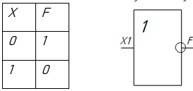

Булевы операции
Стрелка Пирса
Стрелка Пирса – операция обратная от дизъюнкции. «ИЛИ – НЕ»
Имеет следующий вид: F=X1↓X2 = (X1VX2) ̅ (Не Х1, не Х2).
Стрелка Пирса принимает значение нуля, если хотя бы одна переменная равна единице; Если все переменные равны нулю, то результат операции стрелка Пирса равна единице.
По данному определению составляем таблицу истинности и чертим логическую схему.

Х1, Х2, Хn –это входы.
F – это выход.
При этом входов может быть много, но минимум два.